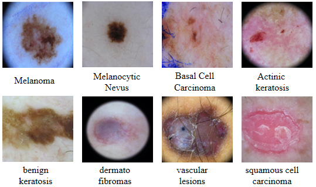
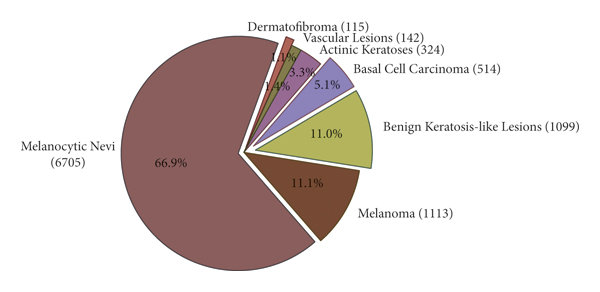

Project Description
This project aims to develop an advanced system for detecting skin cancer by analyzing lesion images, utilizing the ISIC 2019 and HAM10000 datasets. These datasets provide a wide range of skin lesion images, ensuring a comprehensive representation of various skin cancer types, which is essential for training a robust and accurate model.
The project introduces an innovative combination of incremental learning and federated learning techniques to create an adaptable model that prioritizes user privacy. Incremental learning allows the model to continuously evolve as new data becomes available, ensuring it remains current and effective in recognizing emerging patterns and variations in skin cancer presentations. Meanwhile, federated learning enables the model to learn from data distributed across multiple sources without transferring sensitive information to a central server, enhancing data security and protecting patient confidentiality.
By leveraging the diverse samples within the ISIC 2019 and HAM10000 datasets, this approach aims to improve the model's ability to accurately classify various skin cancer types, ultimately advancing the application of artificial intelligence in medical diagnostics. The emphasis on security and adaptability aligns with current healthcare data regulations and fosters greater trust among users and medical professionals, paving the way for the broader adoption of AI-driven diagnostic tools in clinical settings.
Datasets
In this project, two prominent datasets are used for skin cancer detection: ISIC 2019 Skin Lesion Images for Classification and Skin Cancer MNIST: HAM10000.
ISIC 2019: Skin Lesion Images for Melonama Classification
This dataset is part of the International Skin Imaging Collaboration (ISIC) archive and contains thousands of dermoscopic images of skin lesions. It includes various types of skin abnormalities such as melanoma, benign moles, and other skin conditions. The dataset provides high-quality images that are critical for training models to accurately classify different types of skin cancer.

This image provides a visual analysis of the ISIC 2019 dataset, highlighting the distribution of various skin lesion categories. The dataset is essential for training machine learning models to classify different types of skin conditions, contributing to more accurate skin cancer detection systems.
Skin Cancer MNIST: HAM10000
Known as the "Human Against Machine" dataset, HAM10000 includes over 10,000 images of skin lesions, collected from a diverse set of patients. It is widely used in research for developing models to classify various skin conditions, including melanoma, keratosis, and benign nevi. This dataset is particularly valuable due to its diversity and the comprehensive labeling of lesion types.

The HAM10000 dataset is divided into seven categories, each represented by a probabilistic paradigm in the pie chart.